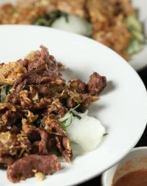
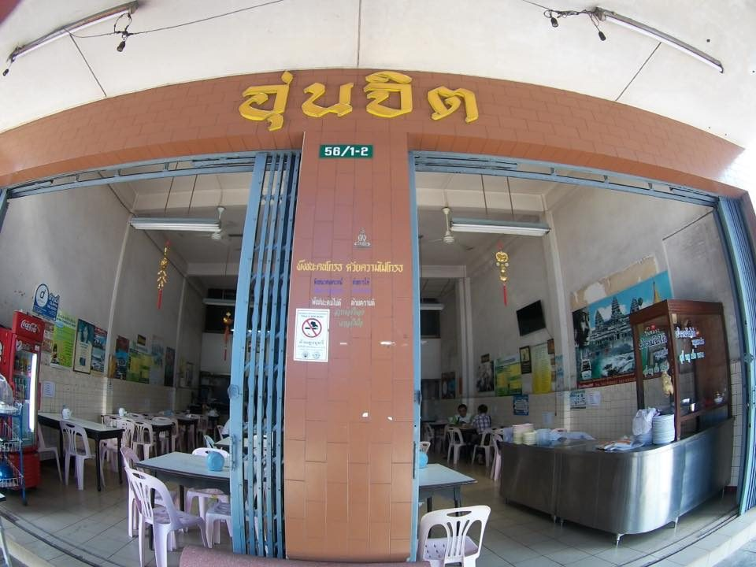
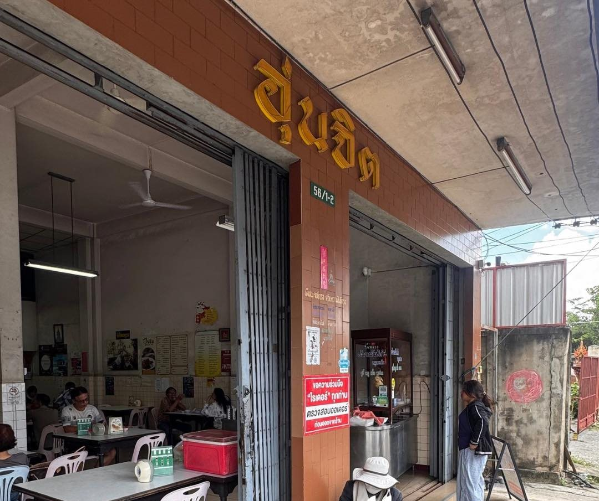
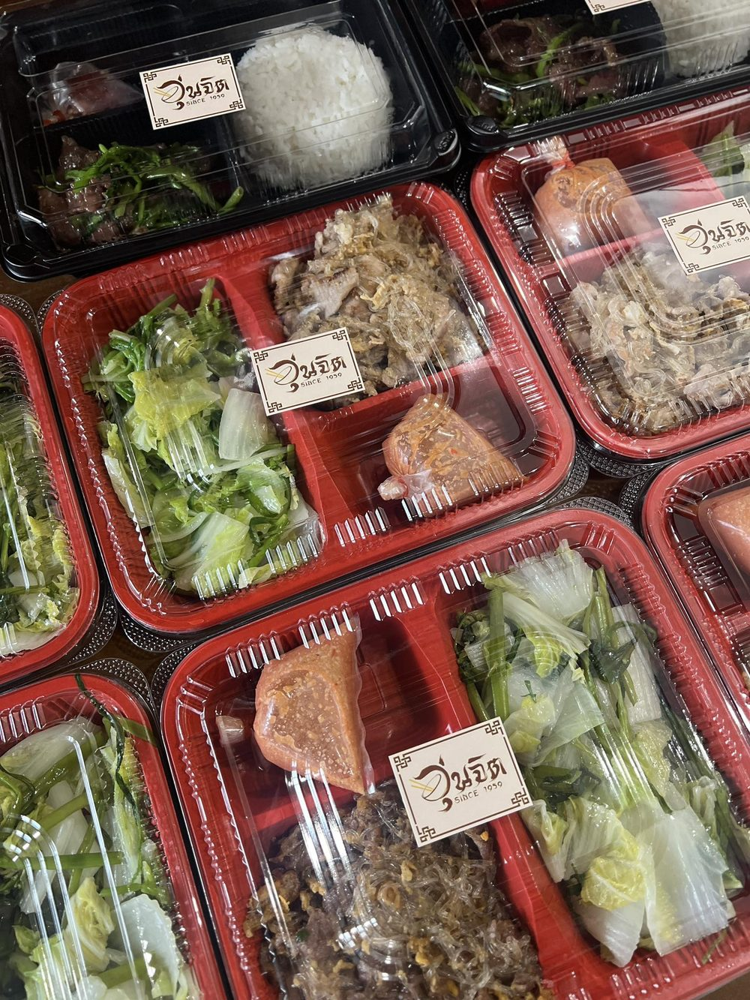
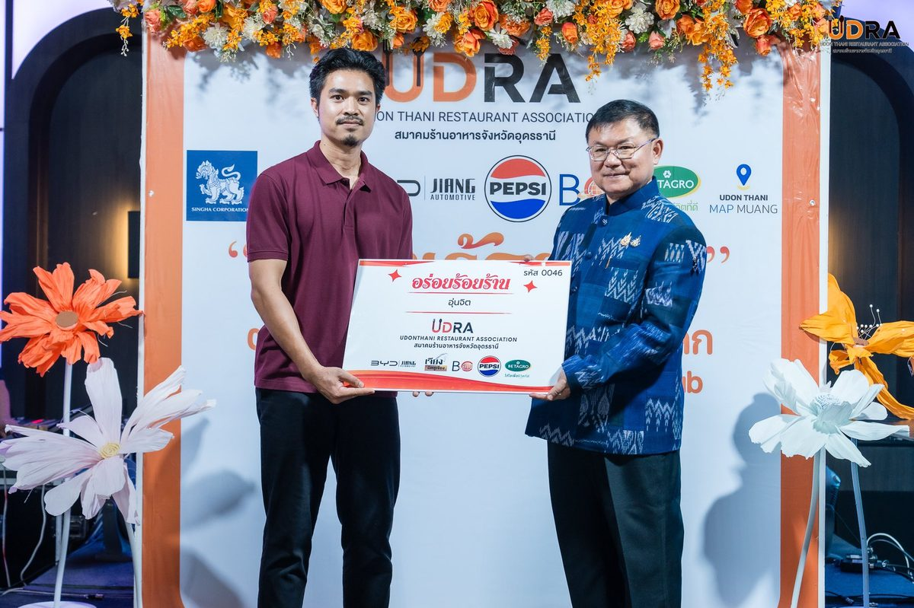

Signature
Dry suki สุกี้แห้ง
Noodles and crisp vegetables tossed in a very hot wok with tender marinated beef or pork, finished with our house suki sauce.

ร้านเก่าแก่ รสชาติดั้งเดิม
Wok-fried dry suki, our old-recipe suki sauce, tender chicken rice and pork satay. Cooked the same way in the same Si Satta Road shophouse since 1959.
Our story · เรื่องของเรา
Ounjit has been part of daily life in Udon Thani since 1959. For generations, locals have come here for a quick plate of dry suki or chicken rice. The tiled shophouse, the folding steel doors and the gold sign over the entrance haven't changed much, and neither has the cooking.
Everything starts with the wok. We stir-fry the suki hot and fast, so the noodles pick up a light smoky edge and the marinated meat stays tender. Then comes the sauce, an old house recipe that people come back for again and again.
“น้ำจิ้มรสเด็ด เนื้อหมักเข้าเนื้อ
ตำนานที่คนอุดรรู้จักดี”


Meetings & events · ข้าวกล่อง
Hosting a meeting, a training day or a seminar? We prepare boxed meals for groups. รับทำข้าวกล่องประชุม-สัมมนาต่างๆ
Call us with your date and headcount and we'll arrange the rest.

Recognition · ความภูมิใจ
In 2026 Ounjit was one of the restaurants recognised in the Udon Thani Restaurant Association's “อร่อยร้อยร้าน” programme. We're proud to be counted among the city's long-time favourites.
What guests say
“Very OG place for locals. I recommend the stir-fried beef and the chicken rice. Both could be top 3 in Udon Thani.”Google review
“สุกี้อร่อยมากโดยเฉพาะสุกี้เนื้อ เนื้อนุ่มหอม น้ำราดสุกี้กลมกล่อม ข้าวมันไก่ก็อร่อยไก่นุ่ม”Google review
“อร่อยมากๆ สุกี้แห้ง ผักกรอบกรุบ หมูสะเต๊ะน้ำจิ้มอร่อย”Facebook review
Visit · การเดินทาง